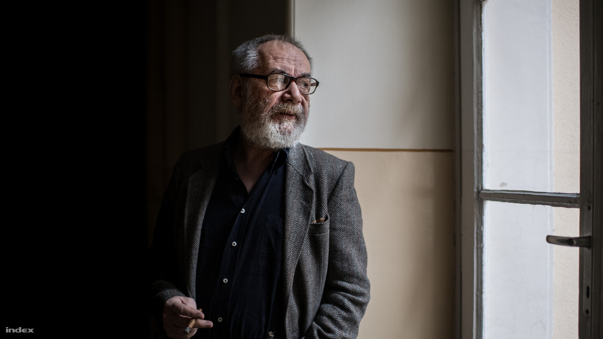
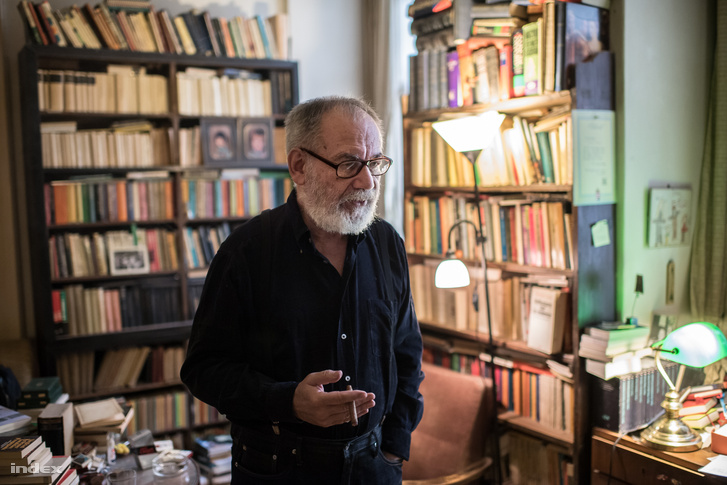
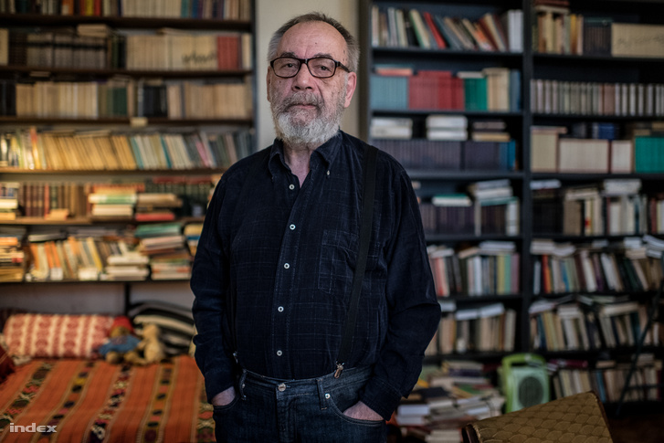
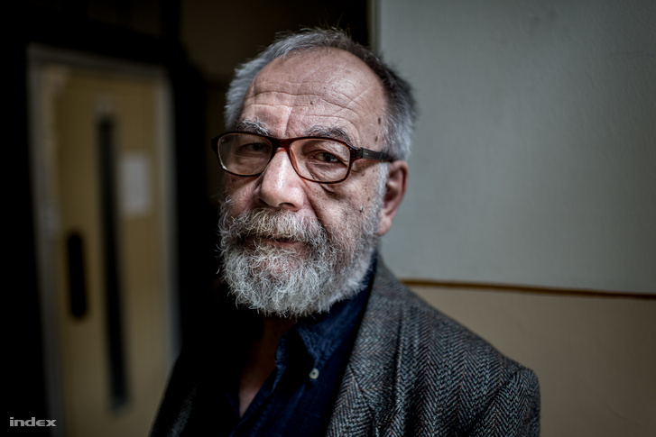
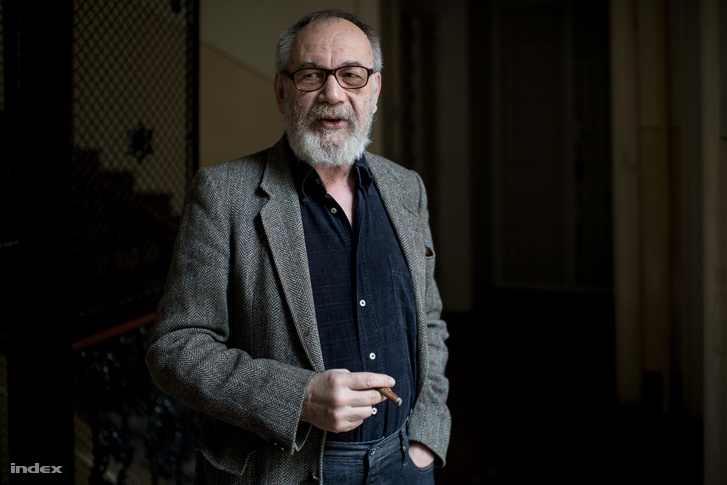

Mínusz 15 fok fogadta Rakonczayt az Antarktiszon
TGM: Magyarország a legreakciósabb ország a Földön

Tamás Gáspár Miklós a rendszerváltó liberális értelmiség
meghatározó alakja volt. Az első szabadon választott parlamentben az
SZDSZ-ben politizált, a kétezres években baloldali fordulatot vett,
közéleti kérdésekben rendszeresen publikál hazai és külföldi lapokban.
Interjú a novemberben hetvenéves filozófussal az ébredező magyar
marxizmusról, a nemzetközi fasizálódás okairól és a kozmopolita
mucsaiságról.
Néhány erős állítás az interjúból:
- A magyar értelmiség teljesen elhallgatott közéleti kérdésekben, ez a diktatúrák egyik jellemzője.
- A Fidesz szélsőjobboldali káderértelmiséget próbál létrehozni, ami menni fog természetesen.
- Jól látja a kormánysajtó, hogy a nyugati egyetemekről hatalmas mennyiségben térnek haza fiatalok, akik nem liberálisok, hanem baloldaliak, marxisták.
- Magyarországon elképzelhetetlennek tűnik a jóléti fordulat, mert a magyar gazdaságpolitikát nagy mértékben a nyugati autóipari cégek határozzák meg, nekik pedig nem érdekük ilyesmi.
- A szélsőjobboldal világszintű terjedésének oka, hogy a kék- és fehérgalléros dolgozói osztály félti a 2008-as válság után ingataggá vált helyzetét.
- Magyarország a legreakciósabb ország a földön, sehol sem azonosulnak a második világháború veszteseivel, csak itt.
- Orbán 2013-ban még hallgatott a tanácsára, a filozófus most is javasolt valamit a kormányfőnek.
Nincs tévéje, nincs fenn a Facebookon...
Van egy Facebook-oldalam!
De azt nem ön szerkeszti.
Nem, egy Amerikában élő kollégám.
Tehát nincs közvetlen tapasztalata a kommunikációs és tudatipar köré szerveződő világról. Hogyan tudja így kritizálni a fennálló rendszert?
Látok egyebet. A lányom tizenhárom éves, ismeri a youtubereket, az influencereket meg isten tudja, micsodákat, szóval én is nagyon tájékozott vagyok. Meg hallgatok rádiót, az internet csodálatos, tudom hallgatni a Deutschlandfunk és az Ö1 esti adásait: hangjátékok, hosszú fölolvasások, Brahms.
Sokan mondják, hogy az értelmiség elvesztette az információs monopóliumát, és ma már trollok és kommentelők magyarázzák el egymásnak a világ dolgait. Annak, hogy mit ír ön, kisebb a súlya, mint az internet előtti korban.
Szamárság. Egyrészt az internetnek köszönhetően sokkal nagyobb közönségem van, mint bármikor korábban. Másrészt az értelmiség hatása érzékelhető módon nem változott semmit.
Megváltoztak a közlési formák, de ez egy örök probléma. Annak idején Platón azon aggódott, hogy ha mindent leírnak, az tönkreteszi a jó szóbeli kultúrát. Teljes volt a kétségbeesés a nyomtatás bevezetésekor is, meg amikor megjelent a tömegsajtó. Ugyanez történt a rádióval, a filmmel, a tévével és most az internettel is.
Tehát alaptalan, hogy az internet elterjedésével csökken a színvonal?
Ha belenéz az 1920-as, 30-as évek bulvárlapjaiba, sokkal butábbak és fölületesebbek voltak, mint amit ma olvasunk az interneten. Aggódom magam is, mert a szöveg háttérbe szorul a kép és az instant kommunikáció mögött, de tudatában vagyok, hogy az aggodalom a kommunikációs alakzatok miatt állandó a kultúra történetében. Több egyetemista van a világon, mint volt. Diákok tízezrei olvasnak olyan elméleti szövegeket és magas irodalmat, amelyeket ilyen tömegben soha nem olvastak az emberek. Hogy az intellektuális diskurzus figurái kisebb szerepet játszanának, én nem észlelem. Nyilván vannak változások, nyilván vannak bulvárhősök, de mindig voltak.
Mégis azért valahol az látszik, hogy a rendszerváltás klasszikus értelmiségi szereplői kikoptak a képernyőkről és napilapokból, ön talán az egyik utolsó, aki továbbra is rendszeresen szerepel.
Annak, hogy ennyire elszigeteltnek látszom, nagyon egyszerű az oka. A magyar értelmiség elhallgatott közéleti kérdésekben.
Miért?
Miért? Jó vicc. Hát a diktatúra miatt.

Fotó: Bődey János / Index
Akkor akár hangosabbak is lehetnének.
Csakugyan? Diktatúrában hangosak szoktak lenni az emberek? Ezt nem tapasztaltam, pedig éltem néhány diktatúrában. Ez itt most viszonylag puha diktatúra, de az emberek félnek a következményektől, és úgy érzik, hogy reménytelen a helyzet. Az utóbbi a fontosabb.
Azok, akik ezelőtt tíz évvel teleírták az újságokat politikai relevanciájú szövegekkel, azok ma nem produkálnak ilyen szövegeket, mert úgy érzik, hogy nem érdemes. Ez egy szimptómája a diktatórikus vagy zsarnoki helyzeteknek.
Beszélt erről ezekkel az emberekkel?
Nem szoktam erről személyes szemrehányást tenni senkinek. De talán tennék, ha beszélgetnénk erről.
Akkor honnan tudja, hogy emiatt nem írnak?
Látom, hogy az írásaikból süt a reménytelenség. Maga a hallgatás mit jelent? Mikor mondták gondolkodók, hogy a közélet alantas, és a belső életbe való visszahúzódás az érték? A sztoikusok mondták ezt a hellenisztikus királyságok zsarnoki világában, és a Római Birodalom még annál is zsarnokibb és félelmetesebb világában. Ezek a dolgok összefüggenek.
Ön szerint a Fidesz demokratikus választásokon nem legyőzhető? Mi az ön diktatúradefiníciója?
Már rég nincsenek demokratikus választások Magyarországon. Milyen demokratikus választások azok, ahol nincs demokratikus nyilvánosság? Nevetséges. De nem ez az egyetlen kritérium. Voltak olyan történelmi időszakok, amikor az embereknek elég nagy volt a mozgási szabadságuk, például a francia forradalom előtti ötven évben Franciaországban vagy a XVII. században Németalföldön. Időnként lecsukták az akkori másként gondolkodókat, de egyébként elképesztő burjánzó, szabad irodalom volt. Ugyanezt lehet elmondani az 1970-es évek végétől jó néhány szocialista országban. Formálisan fönnálltak a zsarnoki fölépítmények, csak már nem voltak igazán hatékonyak, vagy hagyták a burjánzást, mert a vezetők elvesztették a maguk hitét. Szabadabb világok voltak, mint a mostani. Ki ír ma olyan szabadon, mint Diderot írt?
Például ön?
Hát persze.
Mi különbözteti meg önt másoktól, akik nem írhatnak ilyen szabadon?
Az, hogy én nem vagyok része eleven ellenzéki kultúrának, egy magányos ember vagyok. Diderot nem volt magányos.
Mikortól datálja itthon a diktatúrát?
Diktatúra akkor van, amikor a nép észleli a diktatúrát. Ez itt hat-hét éve történt meg. A középosztály sokkal többet tud, mint amennyi megjelenik a sajtóban.
Ott vannak például az elbocsátások a közigazgatásban. Ez politikai tisztogatás, mint mindenki tudja, de senki nem meri szóvá tenni. Akik nem igazán fanatikus hívei Orbán Viktornak, azokat elbocsátják.
Azért egy elég nagyra nőtt, túlburjánzott rendszerről beszélünk.
Ez teljes tévedés, a közigazgatásban káderhiány van. A modern államot rendkívül nehéz igazgatni, és ehhez rengeteg emberre van szükség. Amikor elbocsátják a természetvédelem, a műemlékvédelem, a szociálpolitikai igazgatás, a menekültügy szakembereit, akkor nem a túlzott bürokrácia szűnik meg, hanem egy-egy közigazgatási ágazat: az állam megy tönkre, pontosabban az állam civilizációs funkciói. Mi az értelme, hogy a Corvinus tulajdonosa (állami pénzből föltöltött) magánalapítvány lesz? Az egyetemi tanárok nem lesznek köztisztviselők, ennek folytán percek alatt el lehet őket bocsátani, mint bármelyik cégnél. Ennek a lehetőségnek nagy fegyelmező hatása van az alkalmazottakra.

Fotó: Bődey János / Index
Azt mondják, épp így kerülnek ki az eddig nehézkes bürokrácia alól, és ez teszi lehetővé az egyetem fejlesztését.
Tudom, hogy ezt mondják, de füllentenek. Arról van szó, hogy a hatalmat egyre dinamikusabbá teszik, és szélsőjobboldali káderértelmiséget neveznek ki. Menni fog. Rengeteg pénzük van, óriási hatalmuk van, s egyre könnyebben szoknak hozzá a beosztottak, az alárendeltek. Az ellenzéki attitűdök visszahúzódnak a panaszkultúrába, amely pusztán defenzív.
Az antikapitalista pozíció teljesen meg fogja változtatni a helyzetet
Az ön felfogása szerint mi egy értelmiségi szerepe vagy feladata egy ilyen politikai környezetben?
Távol álljon tőlem, hogy magamat tekintsem mintának, ez nyilván vérmérsékleti kérdés is. Én lázadásra és ellenállásra vagyok beállítva. Mindenki nem élhet így. Szerencsés ember vagyok. A szabadsághiány és az elkerülhető szenvedés léte hideg dühöt, keserű gúnyt váltott ki belőlem mindig. A részvét – amint a francia forradalom óta tudjuk – nem ártatlan érzés.
Valamit csak gondol erről.
Azt gondolom, hogy ez átmeneti állapot, és lesz, sőt kezd lenni igazi rendszerellenzék, fundamentális oppozíció, amely nem a kormánynak, hanem a rendszernek az ellenzéke. Ez a pozíció antikapitalista, baloldali, egyre több fiatal részese van. Lehet észlelni, ha valaki figyeli a jeleket, és nyilvánvaló, hogy teljesen meg fogja változtatni a helyzetet.
Ez nem a liberális kritika, amely a nyugati, részben csak elképzelt vagy elmúlt liberális demokráciát tekinti etalonnak, és még mindig arról beszél, hogy „eltorzult a demokráciánk”, mert még mindig érez közösséget a tőkés állammal, mert fennállnak teljesen formálisan és üresen a parlamenti külsőségek, és még mindig vannak állítólagos választások. Szemernyivel jobb választások, mint a Kádár-rendszerben, de alig. A radikális szembenállás artikulációja természetesen meglesz, virágozni fog, nem nekem kell profetikusan meghirdetnem: alakul. Nem teljesen függetlenül tőlem, de azért nagyrészt igen. A nyugati egyetemekről hatalmas mennyiségben térnek haza a marxisták, ezt jól látja a Magyar Idők. Teljesen igazuk van, ma Nyugatról nem liberálisok térnek haza, hanem baloldaliak, sőt: marxisták, huhú.
És ezt nem tudja megállítani a kormány?
Ezek gondolati változások. Hacsak nem vezetnek be radikális cenzúrát, tehát nem viszik el például a Mérce szerkesztőit, és nem zárnak börtönbe embereket, akik a kormány álláspontjával ellentétes nézeteket hirdetnek, akkor nem. De akkor sem: elkötelezett emberek elnyomása és üldözése ellenállást szokott kiváltani.
Természetesen a kormány nagyon jól tudja, hogy ezek jelenleg néhány száz, esetleg ezer ember körében lezajló folyamatok. De hála istennek még nem jöttek rá, hogy eddig minden, ami új, néhány száz vagy néhány ezer ember körében kezdődött el. Soha nem a teljes nép körében indulnak meg a változások. Hány ember volt a demokratikus ellenzék hatókörén belül az 1980-as évek második felében? Néhány ezer ember.
Tehát ön szerint a jelenlegi rendszert egy marxista politikai közösség fogja leváltani?
A rendszert csak a nép változtathatja meg. A fölvilágosodás se döntött meg semmit, de a forradalmi nép – a fölvilágosodás tanítványa – igen. Én csak azt észlelem, hogy az ellenállásnak kialakulnak új gondolati formái. És az ebben már benne élő emberek olyan könyveket olvasnak, olyan gondolatokkal foglalkoznak, amelyek a legtöbb honfitársunk számára egyelőre ismeretlenek. Ahogy az 1980-as években is közismeretlenek voltak a főleg angolszász jogfilozófiai, alkotmányelméleti gondolatok, amelyek a magyar köztársaság kialakításában később fontos szerepet játszottak. Meg föl is kellett újítani hagyományokat: Bibót, Eötvöst. Így szokott ez lenni. Majdnem mindig vannak ellenálló szellemi gócok. Közülük jó pár elvész és elsüllyed. Persze.
Ez a baloldali közösség tehát már nem a liberális demokráciát tekinti elérendőnek. De akkor mit?
A szocializmust. A kommunizmust.
Egy korábbi interjújában még azt mondta: a legtöbb, amit most akarni lehet, az a 70-es évek jóléti államaihoz való visszatérés, ami egy liberális demokrácia volt.
Igen, ez az, ami a rendszeren – az európai kapitalizmuson – belül még megvalósítható. A szociáldemokrácia reformmozgalom volt, amely együtt tudott élni a parlamenti demokráciával, bár nem könnyen. Elképzelhető, hogy egy jóléti állami fordulat végbemegy, de föltehetőleg csak Nyugaton. De ne feledjük, milyen brutálisan verték szét a szociális államot, a szakszervezeteket az 1980-as, 90-es években.
A félgyarmati, perifériaországokban, mint Magyarországon, ahol a gazdaságpolitikát nagyon nagy mértékben nyugati autóipari befektetők határozzák meg, jóléti fordulatot végrehajtani nem lehet, mert azzal egyet kellene értenie az Audinak meg a Mercedesnek.
Itt vagy a harmadik világban nehezebb bevezetni, mert ha ezek a cégek elmennek, nagyjából megszűnik a magyar gazdaság. Ezért van szükség Indiában és Brazíliában félfasiszta kormányokra. Ameddig ez a struktúra fönnmarad, addig a kis méretű modern szektora a gazdaságnak neoliberális irányítás alatt lesz.
Hogy érti ezt?
A magyar gazdaságnak három szektora van. Egy modern, amely nyugati tulajdonban van, és egy honi szektora, amely a hazai komprádorburzsoázia és félfeudális nagyúri rendszer irányítása alatt van. És van a harmadik szektor, ahol mindenki éhen hal, ahol voltaképpen nincs „gazdaság”, csak a társadalomból kizuhant, magukra hagyott emberek vannak. Ez ismerős Latin-Amerikából, és hasonló rendszerek alakultak ki Kelet-Európában is. Sok tekintetben semmi nem változik.
Gondoljunk bele: mivel bírálja a Nyugat Kelet-Európát ma? Emberi jogok. Mivel bírálta a Nyugat Kelet-Európát Brezsnyev idején? Emberi jogok. Mi változott? Semmi.
A kontraszt történelmi okokból hasonló volt a modernitás kezdete óta. A nyugati társadalmak mindig liberálisabbak, szabadabbak, nyitottabbak voltak, mint a keleti társadalmak, és ez továbbra is így van. És ez elég lehangoló.
Azért időközben ott volt a rendszerváltás például Magyarországon, amikor ön aktív politikai szereplő volt. Abban, hogy nem változott semmi, van önöknek felelősségük?
Ugyan! Ez teljesen egységes történeti folyamat, amely lejátszódott mindenütt, mi inkább a balekjai voltunk ennek a dolognak. Nem a mi illúzióink miatt ment ripityára a kelet-európai (és dél-európai) ipar és az egyenlőségelvű szociálpolitika – bár ezek az illúziók is károsak voltak, ezt belátom. Ártatlannak nem érzem magam, és igen későn (a múlt század legvégén) ébredtem föl, de tisztelt kollégáim még ma se.
Az is egy népszerű vélemény, hogy a mostani közállapotok részben egy elitellenességből is táplálkoznak, és itt nálunk konkrétan ez alatt az önt is magába foglaló rendszerváltó elit értendő, amely e szerint a kritika szerint a köznép számára érthetetlen, távoli módon kommunikált, burokban...
Színtiszta hülyeség. Hatalmas tömegrendezvényeken szónokoltam százezreknek. Miféle burok?

Fotó: Bődey János / Index
Ha viszont itt senkinek nincs felelőssége, mert szerkezetileg törvényszerű, ahogy a dolgok alakulnak, akkor hogyan lehet a Fidesz politikusainak felelősségük abban, hogy mostanra milyen politikai berendezkedés alakult ki?
Ezeket nem tartom értelmes kérdéseknek. Annak ellenére, hogy a rendszerváltás alapeszméi tévesek voltak, beleértve a saját nézeteimet, morálisan jó osztályzatot adhatunk azoknak az embereknek, akik lázadtak az elnyomás ellen, és akartak valami újat, még ha naivan, esetleg tévesen is. Az viszont, hogy valaki tudatosan, sok pénzért részt vesz az elnyomó rendszer kialakításában és működtetésében, az morálisan elvetendő, ez evidens.
Kétségkívül ugyanazok a típusok járnak sikerrel, sőt, olykor ők alkotnak maradandó remekműveket olykor, akik együtt élnek az elnyomó rendszerrel, de valamilyen óvatos distanciát is tartanak tőle. Én ezt a típust nem kedvelem, de be kell ismerni, hogy ez vált be Kelet-Európában, ez sikeres életstratégia. Meg hát az egész világtörténelemben kivétel volt a szabadság.
Én arra vagyok ítélve, hogy mindig kisebbségben legyek, ezt már rég tudom, időnként egész elképesztő mértékben vagyok kisebbségben. Például most volt az SZDSZ alapításának harmincadik évfordulója, engem nem hívtak meg, ami jót tesz a reputációmnak, de rosszat a közérzetemnek.
Tudja, miért nem hívták meg?
Ezek véletlenszerű és mégsem véletlenszerű dolgok. Azért, mert nem találták meg a telefonszámomat. És ez jellemző és elkerülhetetlen.
Az alsó középosztály félti szerény privilégiumait
Térjünk vissza a formálódó újbaloldali körökhöz! Ezek hatékonyabbak lehetnek, mint a Fidesz most már hagyományos ellenzékének tekinthető pártok?
A jelenlegi szélsőjobboldali kormányzattal szembeni liberális demokratikus ellenállás hatástalan, mert nem tud olyasmit kínálni ennek a társadalomnak, aminek a többség örülne. A többség ilyen rendszerekben mindig ellenséges a (bármiféle) kisebbségekkel. A mostani pártrendszerben a liberális/szocdem/zöld pártok szociális és gazdaságpolitikája csak árnyalatokban tér el a kormányétól. A mai kormány csak azokkal szemben alkalmaz megszorításokat, akik védtelenek, de velük aztán jócskán. Ugyanaz, mint a neoliberális politika, csak stratégiai jellegű, ami lényeges dolog.
Az, hogy a hajléktalanokkal ne bánjanak ilyen embertelenül, a nyomorgó kisnyugdíjasokkal, a betegekkel történjék valami, a falusi gettókban élőket pedig segélyezzék: ezek népszerűtlen dolgok. A liberálisok sokkal humánusabb, jótékonyabb, az underclasst, a szubproletariátust segítő államot képzelnek el, ez viszont nem kell a még állásban lévő, dolgozó többségnek. Pláne, hogy a segítségre szoruló szegények nem nagy, de nem is jelentéktelen része a gyűlölt cigánysághoz tartozik. A segély Amerikában is a feketék miatt népszerűtlen: mindig minden etnikai kisebbséget dologtalannak és enyveskezűnek tekintettek a történelemben, ez a séma örök.
Hogyan lehetne elérni, hogy szolidárisabbak legyenek az emberek?
Sehogy, ez ki van zárva, mert ellenkezik a többség osztályérdekeivel. Miért van sikere Trumpnak, Salvininek, Orbánnak? És majd meglátják, hogy milyen szépen fog fasizálódni a CDU perceken belül. Azért, mert van egy meglehetős jólétben élő kék- és fehérgalléros dolgozói osztály, amelynek a 2008-as válság után ingataggá vált a helyzete, és próbálja őrizni a viszonylag jó társadalmi és gazdasági helyzetet más igénylőkkel szemben. Ez a magyarázat a migránsellenességre is.
A menekültproblémával versenyhelyzet állt elő. A kelet-európai országok Nyugatra emigráló dolgozóinak versenytársai a közel-keleti és afrikai menekültek, bevándorlók és vendégmunkások. Életbevágó kérdés a kelet-európai országoknak, hogy a mi „migránsaink” keressenek Nyugaton, ne a „négerek". Kemény verseny van a nyugati munkahelyekért, ezt képviseli Orbán Viktor is. Abban a pillanatban, hogy a munkásosztálynak privilégiumai lesznek, a munkásosztály is konzervatív és reakciós osztállyá válik, mint Herbert Marcuse leírta már 1968-ban. Hát mi itt az újdonság?
Miért nem vettek részt munkások az Egyesület Államokban és Németországban a '68-as mozgalmakban? Azért, mert ezekben az országokban a munkásosztály helyzete sokkal jobb volt, mint Franciaországban és Olaszországban. Nekik nem kellettek ezek az őrült diákok, akik bevonták volna a szűk munkaerőpiacra meg a versengésbe a kisebbségeket, meg a proligyerekek iskoláztatására költötték volna az adóbevételeket. Versenyhelyzet volt a munkaerőpiacon, különösen az alsó szegmentumaiban. Ez ma is így van. Az egyenlőségi és zöld törekvések fenyegetik azt a nagyon kevéske kis privilégiumot, amivel az alsó középosztály rendelkezik.
Ma Franciaországban a környezetvédelmi adóval megterhelt dízelolajárak miatt tüntetnek a rossz tömegközlekedés miatt autóba kényszerülő dolgozók (tehát közvetve a globális fölmelegedés mellett), továbbá a bevándorlók ellen, amiben támogatja őket az Európa-ellenes, Le Pen-féle szélsőjobboldal és a Mélenchon-féle nacionalista baloldal. Ugyanakkor Macron népellenes politikájával szemben igazuk van. Közben Pozsonyban a szlovákiai – szlovák és magyar – fiatalság a „sorosozás”, vagyis az antiszemita összeesküvés-elmélet ellen tüntet: de ezek főleg diákok és ifjú értelmiségiek; ugyanők demonstráltak a nacionalizmus ellen Ljubljanában, ahol én is beszédet mondtam. Ez az egész nagyon nincs jól.
Akkor a helyzet megváltoztathatatlan?
Nyugaton azért lehetne változtatni jóléti állami politikával, mert elég gazdagok hozzá, és a jómódban élő középrétegeknek meg a munkásosztály felső részének is lehet ajándékokat osztogatni, hogy eltántorítsák őket a szélsőjobboldaltól. De pillanatnyilag a szélsőjobboldal az egész világon védi a szerény privilégiumokkal rendelkező középrétegek érdekeit, a többiek kiszorításának leghatékonyabb módja pedig a rasszizmus. Ezt nem lehet könnyedén legyőzni, pláne olyan viszonylag szegény országban, mint Magyarország, pláne ilyen diktatórikus viszonyok között.
A most éledező újbaloldalnak a potenciális végpontja egy ugyanolyan rosszul működő szocializmus, mint történt korábban is?
Ennek a kis éledező radikális baloldali közegnek nem az a funkciója, hogy hatalomra kerüljön, és megváltoztassa a rendszert. Elindíthat olyan szellemi folyamatokat, amelyek megváltoztathatják az ellenállás természetét és a diskurzus fontos összetevőit. Ez nem kormányprogram. Nem arról beszélek, hogy szervezzünk tömegpártot és váltsuk le a Fideszt. Ez egyrészt lehetetlen, másrészt így nem kívánatos. A parlamentáris rendszer megbukott. Kétségkívül jobb volt a parlamentáris rendszer, mint a mostani puha diktatúra. De vége, és ez nem föléleszthető. A „valóságosan létező szocializmus” nem volt szocialista, nem fog visszatérni, és ne is térjen.
Ön egyébként mikor lett marxista, és milyen felismerés vezetett idáig?
2000 körül. Rá kellett jönnöm néhány közhelyre, amit tudhattam volna. Be kellett látnom, hogy azok a verziói az államéletnek, amelyek tapasztalhatók, azok puszta intézményi és jogi elemzéssel nem leírhatók, és egy totális társadalmi analízisre van szükség. Ez pedig a marxizmus, nincs más.

Fotó: Bődey János / Index
Lát arra esélyt, hogy itthon normálisan lehessen beszélni Marxról? A NER minden erejével azon van, hogy úgy állítsa be, ha valaki Marxra hivatkozik, az gyakorlatilag sztálinista.
Nem tehetek arról, hogy elmaradott országban élünk.
De azokban az országokban, ahol az antifasizmus része a nemzeti kultúrának, ott nem lenne lehetséges, hogy a hatalom úgy beszéljen Marxról, ahogy nálunk. Nem lenne lehetséges Görögországban, a volt jugoszláv államokban, de még Csehországban vagy Szlovákiában se. Azért, mert ezeken a helyeken az antifasiszta mozgalmakban a kommunisták játszották a vezető szerepet. Nem véletlen, hiszen a kommunisták voltak a fasiszták ellenfelei, a fasizmus azért jött létre, hogy leverje a nyugati szocializmusokat. Ez nem sikerült – hiszen a szocializmus, a kommunizmus: eszme – , de sikerült az eszme hordozóinak kikiáltott zsidókat (és sok százezer baloldalit) kiirtani. Ám az eszme él.
Lukács György Történelem és osztálytudat című könyvét nagyon kevesen olvassák Magyarországon, de románul, szerbül, törökül, perzsául, kínaiul, japánul mindenki olvassa, aki Hegelt, Dosztojevszkijt, Webert olvas. Majd itt is így lesz, Magyarország elkésett ország az Orbán-rendszer (és a korábbi liberális hegemónia) miatt, de ez nem fog örökké tartani.
Írtam régen a Magyar Narancsba egy nevezetes cikket, amelynek az volt a címe, hogy „Az utolsó tengelyhatalom”. Ez Magyarország. Hiszen melyik az az ország, ahol azt mondják, hogy elvesztettük a két világháborút? Ilyet a mai Németországban sem mondanak, pedig... Baj, hogy Hitler elvesztette a háborút? Megbízhatóan zsidóbarát történészek azt írják Magyarországon a második világháborúról, hogy „csapataink”, „honvédeink”, „visszavonultunk”. Képzelje el, hogy azt írja egy történész Németországban, hogy unsere Wehrmacht. Az biztosan náci. Igazi, keményvonalas náci. Ez még az AfD-ben is tűrhetetlen lenne. Csak Magyarországon azonosul az elitek egy része a második világháború veszteseivel. Se Ausztria, se Németország, se Románia (a hadijog szempontjából „vesztes” államok), senki más, csak mi.
Mi lehet ennek az oka?
Ez a legreakciósabb ország a Földön.
Akkor végül is igazolva látja azt a rendszerváltáskori tézisét, amely szerint „mucsa és félelem, vagy szabad demokrata többség"?
Igen. Aztán persze akkor azonnal meghamisították, amit mondtam, mert én a Mucsát természetesen nem az országra (tehát például magamra) értettem, hanem arra, ha a kisgazdák, satöbbi hatalomra kerülnek. Magyarország nem mucsaibb, mint bármely ország, mert minden ország szörnyű, mint ahogy minden állam is az. Az emberiség mint olyan, elég borzalmas.
Konkrétan mit takar a mucsaiság?
Vidékiességet meg elmaradottságot. Por és sár. De egyébként pontosan ugyanilyen mucsainak tekintem ezt a szervetlen, mesterkélt, provinciális nyugati másolatot, ami uralkodik a budapesti társadalmi élet bizonyos szakaszaiban. Mi vidékibb, mint az utánzás? Az a legvidékibb. Úgyhogy a kozmopolita mucsaiság szintén rendkívül jelentős szerepet tölt be az életünkben, enné meg a fene. A rendszerváltás idején pedig illúzióim voltak. Azt gondoltam, hogy mindenféle fényes modernizációk fognak lejátszódni, hacsak meg nem tapad Torgyán József és a hozzá hasonlók. De nem lett volna fényes akkor sem, ha ők nincsenek. Lengyelország és Csehország se jobb nálunk sokkal, pedig ott kezdetben mindenféle demokratikus géniuszok kerültek az élre. Úgyhogy ezt is rosszul láttam.
Egyfelől azt mondja, hogy az elmaradottság az Orbán-kormánynak is következménye, másrészt pedig, hogy ez egy mélyen lévő alapbeállítódás. Hogy jönnek ezek szinkronba?
Egy tehetséges zsarnoki típusú ember és köre kihasznál bizonyos kulturális adottságokat.
Zárszóként, Orbán 2013-ban az ön írásának hatására elment a szatmárnémeti temetőbe, és vitt egy szál virágot az izsáki rendőrségen halálra vert férfi sírjára. Tegyük fel, hogy a kormányfő most is olvassa, mit javasolna neki?
Vonuljon vissza a politikától, és vigye magával az egész pereputtyát. Sok boldogságot kívánok!
Könnyedebb témák
Használja-e még a sétapálcáját?
Nem, mert nem fáj a derekam. Szerencsére ennek már 23 éve.
Miért comic sansszal írja a leveleit?
Mivel?
Ez egy betűtípus, ami cikinek lett kikiáltva az interneten. Azt gondoltam, hogy ez valamiféle kiállás lehet a kulturálisan elnyomott csoportok mellett.
Viccnek indult, aztán rászoktam.
De honnan indult a vicc?
Én is hallottam, hogy ez cikinek számít. Egyébként nekem eléggé tetszik ez a betűtípus.
Látta a TGM egy robot című videót Youtube-on?
Igen.
Ott mi történt pontosan?
Egy rosszul sikerült torokköszörülés.
Ehhez a cikkhez ajánljuk
- Belföld

A szállók még az ott dolgozók szerint is embertelenek, zsúfoltság, veszekedések és bogarak nehezítik az elalvást.
tegnap, 13:12
541
- Belföld

A főpolgármester azért meggondolja, mert amikor mínusz van, az speciális helyzet. De a tervek szerint az első ütemben, még az idén 9 kiemelt aluljárót zárnának le, például a Deák térit is.
november 19., 14:32
4599
- Belföld

Szalmalabirintus és Bogyó és Babóca-kiállítás lesz advent idején a városban.
tegnap, 15:40
3404
- Mindeközben

november 19., 11:40
0
- Belföld

Egymillió aláírás a cél, Hadházy Ákos bizakodó.
november 15., 08:43
5278
- Belföld

Az osztrákok tárt karokkal várják Közép-Európa legjobb egyetemét, amire a kormány rászállt.
november 19., 06:41
1226
- Belföld

Az ellenzéki pártok sorra jelzik együttérzésüket, és ajánlják fel az irodáikat a DK-soknak.
november 18., 10:20
1257
- Címlapon

Újabb dokumentummal bizonyítjuk, hogy a szabolcsi zsaruk nem önként és dalolva mondtak le a túlórák utáni pénzekről. A rendőrség tagadott, de érdemi választ nem adott.
1 órája
83
- Belföld

Többszörös nemi erőszak, kényszersorozás és rendőri túlkapások áldozatai nem érdemelték ki a magyar államtól azt a menekültstátuszt, amit a volt macedón miniszterelnök extra gyorsan megkapott. Bemutatjuk, milyen esetek nem érdemelnek védelmet az állam szerint. Az eljárás gyorsasága is furcsa.
tegnap, 19:54
2426
- Címlapon

Népszerűbb lett a hagyományos, kenyérkeresői apaszerep, de párhuzamosan a családcentrikusság is elvárássá vált.
3 órája
122
- Címlapon

Úriember nem csibész, de lehet, hogy átverték.
25 perce
1
- Címlapon

Pedig a kormányváltás után ő nevezte ki Kovács Attilát a posztra. Most mennie kell.
2 órája
15
- Belföld

A két kormányfő telefonon beszélt hétfő délután.
november 19., 18:42
295
- Belföld

Beadták a törvénymódosító javaslatot.
tegnap, 21:32
335
- Belföld

De az ÁSZ választás után indult eljárása majdnem a végéhez ért, így minden adat náluk van.
november 19., 13:58
702
- Belföld

Hosszú Facebook-posztban magyarázza, politikai, koncepciós eljárás áldozata.
tegnap, 16:30
1750
- Belföld

Az ország gázellátása továbbra is zavartalan.
tegnap, 06:27
1124
- Belföld

Nem fizette ki az EKINT-nek megítélt 350 ezer forintos sérelmi díjat jóhírnév megsértése miatt.
november 19., 12:56
783
- Belföld

Balázs az ELTE jogi karán kezdte tanulmányait, de hiába volt meg minden jóakarat az egyetem részéről, ha az akadálymentesítés kevéssé volt megoldva.
november 19., 10:56
589
- Címlapon

Ambrus Attila ittas vezetés miatt megy újra a tárgyalóterembe, de azt mondja, ebben már van rutinja.
50 perce
30
- Belföld

Egy osztrák bulvárlap azt írja, hogy a rendszámtábla alapján valamelyik diplomatáé lehet a luxusautó.
november 19., 19:57
1599
- Belföld

Pont a kormány függesztette fel azt a szabályt, amire a kormány most hivatkozik Gruevszkinél.
november 19., 13:05
642

- Címlapon

És soha nem érezte magát ilyen jól. Nem tipikus történet, de nagyon sokat elárul a magyar gazdaságról.
11 perce
0
- Címlapon

Ha karácsonyra rendelne, szinte már el is késett, de azért összeszedtük, mire érdemes figyelni.
3 órája
114

- Címlapon

A Macedóniai Helsinki Bizottság igazgatója szerint semmilyen alapja nincs Gruevszki menedékkérelmének, a bírósági eljárásai szabályosan zajlottak.
3 órája
173
- Mindeközben

november 17., 18:17
781

- Belföld

Megyei bontásban láthatja, milyen életkorban szülik meg első gyermeküket a nők. Budapesten és környékén többszörösére emelkedett azok száma, akik 35–39 évesen, sőt 40 felett adnak életet első gyermeküknek.
tegnap, 19:17
1527
- Belföld

Egymásnak estek a természetvédők és kisvasútbarátok, de kinek van igaza? A hatósági gőzhenger közben elindult a háttérben.
tegnap, 14:46
455
- Belföld

A párt szerint a főpolgármester nem képes megvédeni a budapestieket a propagandától.
november 16., 12:05
461
- Belföld

A körösladányi rablók egy napig örülhettek a zsákmánynak.
november 16., 07:00
87
- Belföld

A Párbeszéd képviselőjének hozzászólása megint kihúzta a gyufát a KDNP-s levezető elnöknél.
november 14., 15:01
1865
- Címlapon

Dühöng az ellenzék a Gruevszki-ügy miatt.
tegnap, 18:09
344
- Címlapon

A klímaváltozás egyik hatása: az arabica fő termőterületén a történelmi átlag negyedének megfelelő csapadék hullott.
3 órája
20
- Belföld

Kissé erőltetett az érvelés. A Jobbik szerint a Gruevszki-ügy egy Z kategóriás kémfilm nagyon rossz forgatókönyve. A DK megkérdezte, járt-e Gruevszki Orbán házában, és Putsin gazda adott-e parancsot. Az ellenzék kérdőre vonta a kormányt.
november 19., 11:37
816
- Belföld

De máshol is. Szervezetten dolgozhatnak a bűnözők.
november 16., 08:10
306
- Belföld

Elkötelezett tanárnak tartja magát, az öncélú állatkínzást viszont nem támogatja.
november 15., 20:21
160
- Belföld

Elfogták a tavaly augusztusi dejtári gyújtogatás fiatalkorú gyanúsítottját is.
november 16., 12:11
101
- Címlapon

Az 1855-ös cirkuszlázadás bizarr története indította el a várost, hogy gatyába rázza a közbiztonságot. Elég jól sikerült.
3 órája
85
- Címlapon

A Ruben Brandt, a gyűjtő című magyar film közben az ember egy másodpercig nem tud unatkozni, annyi izgalmas dolog történik minden percben – és egyáltalán nem csak a sztoriban.
3 órája
122
- Belföld

Csak a magyar állam segítségével juthatott be útlevél nélkül az országba nem illegálisan az exkormányfő. De akkor ez nem jogi ügy.
november 16., 11:37
1356
- Címlapon

Virgil van Dijk előbb a meccsen, utána meg a lefújás után lett hős.
tegnap, 12:30
95
- Belföld

Megszólalt a Miniszterelnökség a Magyarországra szökő macedón exminiszterelnökről.
november 14., 15:54
420
- Belföld

Rétvári Bence és a váci püspök védnökségével rendeztek huszárversenyt a hétvégén Nagymaroson. A Hussar Race-nek csupa kínai támogatója és kínai résztvevője volt.
tegnap, 16:49
179
- Címlapon

Statisztikai adatokat vizsgálva nem csak azokra az érdekességekre csodálkozhatunk rá, hogy például milyen magasak vagyunk, meddig és hogyan élünk. Az adatok mögé nézve arról is megfontolandó infókat kaphatunk, hogy mit kéne másképp csinálnunk.
1 órája
5
Íme az átlagos magyar nő és férfi
Statisztikai adatokat vizsgálva nem csak azokra az érdekességekre csodálkozhatunk rá, hogy például milyen magasak vagyunk, meddig és hogyan élünk. Az adatok mögé nézve arról is megfontolandó infókat kaphatunk, hogy mit kéne másképp csinálnunk.
- Budapest, cím nincs megadva
- Alapterület 190 m2 Szobák 4+1 db Vételár 75 M Ft
- Budapest, VIII. kerület Lujza utca 10.
- Alapterület 54 m2 Szobák 2 db Vételár 34,99 M Ft
Rovataink a Facebookon